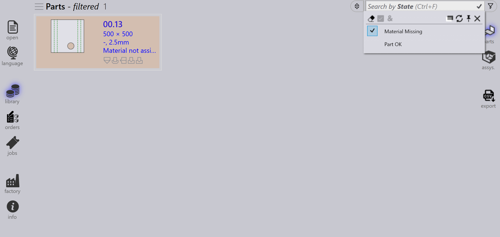

Filtros de piezas
Los filtros de la biblioteca de piezas le permiten buscar y localizar rápidamente piezas en la biblioteca aplicando condiciones específicas. Al limitar los resultados solo a las piezas que cumplen sus criterios, estos filtros facilitan la gestión y el acceso a las piezas relevantes de forma eficiente.

State
-
Utilice el filtro State para buscar piezas según su estado actual.
-
El menú desplegable muestra todos los estados aplicables en función de las piezas de la biblioteca disponibles.
-
La lista de estados cambia dinámicamente según las piezas seleccionadas y su estado.
-
Por ejemplo, seleccione Material Missing para ver las piezas con un estado de material sin resolver.

Status
-
Utilice el filtro Status para buscar piezas según el estado de utillaje.
-
El menú desplegable muestra los estados de utillaje como cuadros de colores y todas las máquinas disponibles y sus errores aplicables.
-
Los cuadros de colores representan los siguientes estados:
-
Blanco: utillaje correcto
-
Naranja: el utillaje tiene un error
-
Amarillo: el utillaje tiene una advertencia
-
Gris: utillaje suprimido
-
-
Si una pieza tiene errores de pestaña estrecha o de utillaje no asignado, al seleccionarlos se mostrarán las piezas correspondientes.

-
Las piezas con utillaje suprimido en la máquina seleccionada se mostrarán al hacer clic en el cuadro de color gris.
Bend mounts
-
Utilice el filtro Bend mounts para buscar piezas según la herramienta de plegado utilizada.
-
El menú desplegable muestra todas las herramientas de plegado disponibles y se puede filtrar por nombre de herramienta, tipo (punzón, cuello de cisne, radio, etc.) o descripción.
-
Seleccione varias herramientas y haga clic en Match all para ordenar las herramientas que utilizan ambas herramientas seleccionadas.
Used tools
-
El filtrado por Used tools funciona de forma similar al filtrado por Bend mounts.
-
Los iconos de herramientas se muestran en tamaños proporcionales (no exactos, pero relativos).
-
Cuando la vista previa del utillaje está abierta, al pasar el ratón sobre una herramienta en la lista de filtros se resalta esa herramienta en el panel de vista previa.
-
Se pueden seleccionar y aplicar varias herramientas mediante Match all.